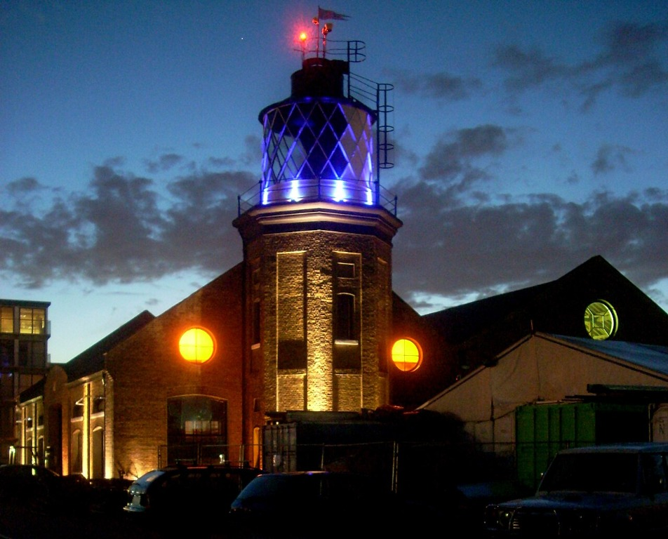
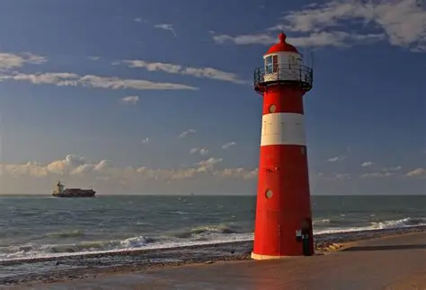
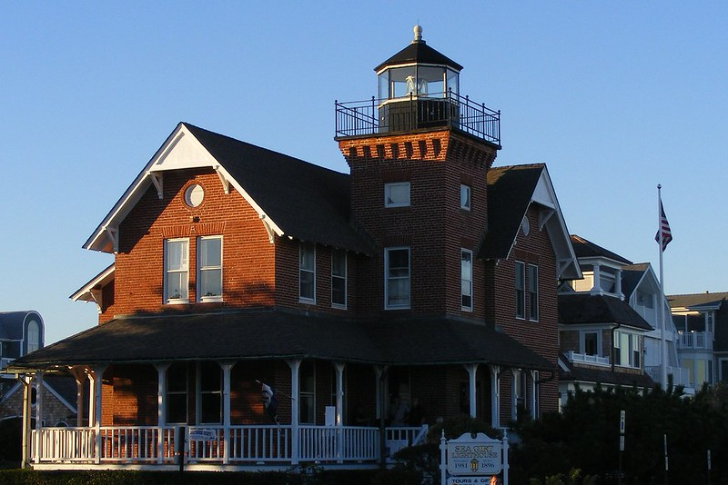
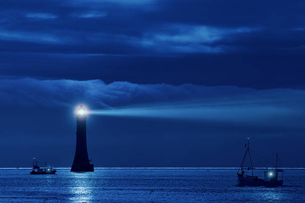
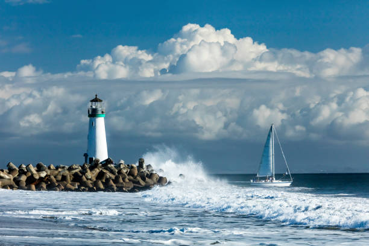
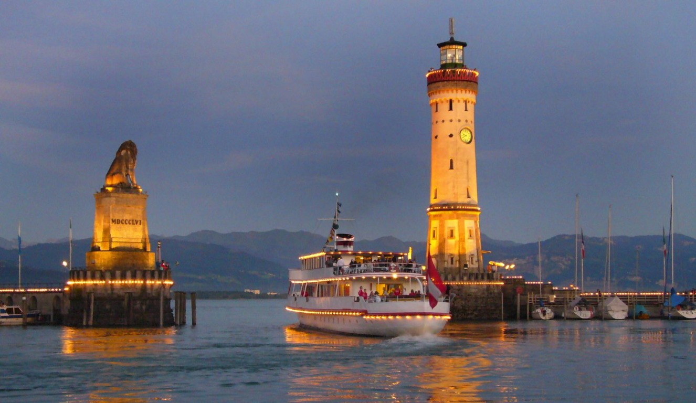
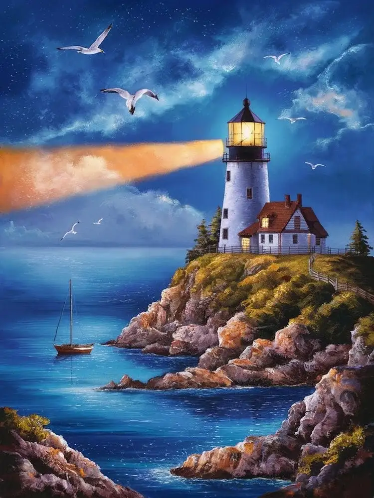
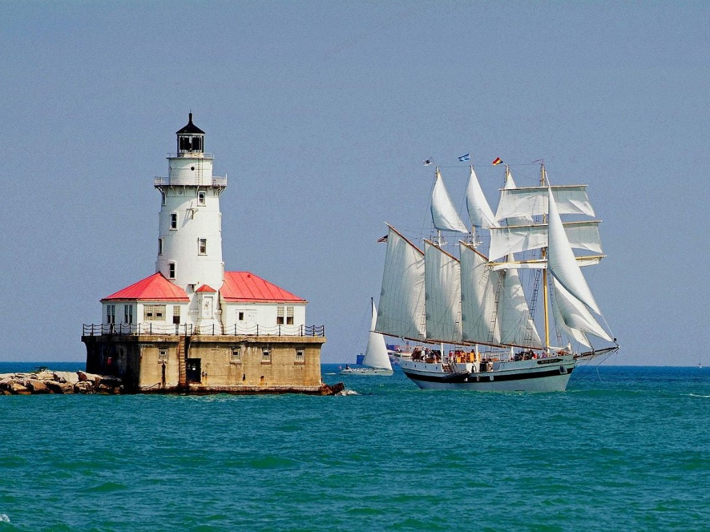
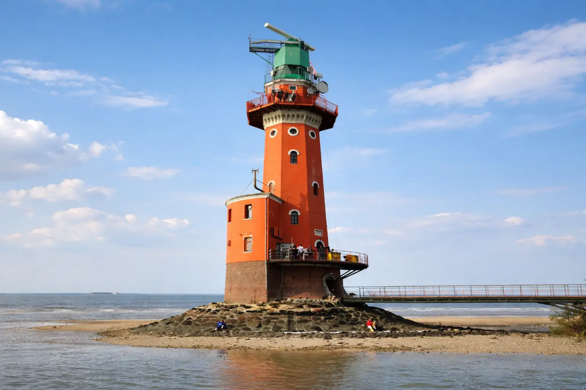

Abend auf der Felseninsel
Die Sonne versinkt im Meer. Auf der dunklen Insel leuchtet der Turm weit über die Felsen hinaus.
KI-generierte SVG-Illustration
Komm mit auf Entdeckungsreise
Wie findet ein Schiff im Dunkeln den sicheren Weg? Ein Leuchtturm zeigt es ihm – mit einem Licht, das weit über das Wasser reicht.
Foto: Grim23, Wikimedia Commons, Lizenz CC BY-SA 3.0.01 · Ein Wegweiser am Wasser
Ein Leuchtturm ist ein hoher Turm mit einem starken Licht an seiner Spitze.
Seeleute erkennen das Licht schon von weit draußen. So wissen sie: Hier ist die Küste, dort liegt ein Hafen – oder hier müssen wir besonders vorsichtig sein.

02 · Ein Turm mit vielen Teilen
Jeder Teil hat eine Aufgabe – vom starken Fuß bis zur hellen Laterne.

03 · Die Technik einfach erklärt
In der Laterne bündelt eine Fresnel-Linse das Licht zu einem hellen Strahl.
Die Lampe leuchtet durch die besondere Linse. Bei vielen Leuchttürmen dreht sich die Optik langsam um die Lampe: Der gebündelte Strahl wandert über das Meer. Wenn er ein Schiff erreicht, sieht die Besatzung das Lichtsignal.
04 · Blinken mit Plan
Leuchttürme blinken nicht alle gleich. Ihr Rhythmus verrät, welcher Turm es ist.
Manche leuchten kurz, manche lang und manche blitzen mehrmals hintereinander. Seeleute kennen diese Lichtfolge wie ein Erkennungszeichen. So können sie auch nachts den richtigen Ort finden.

05 · Nicht jeder Turm ist gleich
An einer Hafeneinfahrt, auf einer Felseninsel oder mitten im Wind an der Küste.
Ein Leuchtturm muss dort stehen, wo Schiffe eine Warnung oder Orientierung brauchen. Deshalb sehen Leuchttürme verschieden aus: manche sind rund und schlank, andere stehen auf breiten Mauern direkt im Wasser.

06 · Licht in jeder Wetterlage
Dämmerung, dichter Morgennebel oder Mondschein – ein Leuchtturm weist Schiffen den Weg.
Die Sonne versinkt im Meer. Auf der dunklen Insel leuchtet der Turm weit über die Felsen hinaus.
KI-generierte SVG-IllustrationIm dichten Dunst blinkt das Signal. Der Lichtschein wird sichtbar und weist den Schiffen den Weg durch die schlechte Sicht.
KI-generierte SVG-Illustration mit Licht- und NebelanimationBei leichtem Wellengang funkeln Mond und Leuchtturmlicht auf dem dunklen Wasser.
KI-generierte SVG-Illustration07 · Drei Türme, drei Zeiten
Schon vor langer Zeit halfen Feuer und Türme den Seeleuten, sicher anzukommen.

09 · Sicher durch die Nacht
Leuchttürme warnen vor gefährlichen Stellen und zeigen, wo die Küste oder der Hafen liegt.
Das Licht ist ein wichtiges Zeichen für Seeleute. Zusammen mit Seekarten, Bojen und modernen Navigationsgeräten hilft es ihnen, sicher zu fahren. Auch bei rauer See bleibt ein hoher Turm gut zu erkennen.

10 · Jetzt bist du dran!
Was macht die Linse im Leuchtturm?
Klasse! Du hast die Linse geknackt. Gleich wartet noch eine letzte Frage über das Blinkmuster.

11 · Noch eine Frage!
Warum haben Leuchttürme unterschiedliche Blinkmuster?
Richtig stark! Jetzt weißt du, wie Leuchttürme Licht bündeln und mit ihrem Blinkmuster Schiffe lotsen. Gute Reise, kleine Entdeckerin und kleiner Entdecker!
